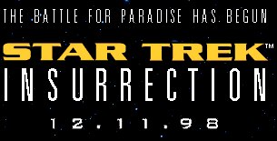
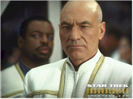
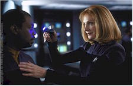
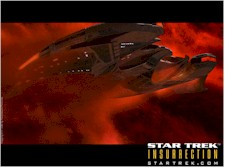

Contents | Features | Reviews | Books | Archives | Store |
 |
|
| Movie Credits | Buy It! |
Star Trek - Insurrection
Review by Eddie Cockrell
Posted 11 December 1998
|  | Directed by Jonathan Frakes Starring
Patrick Stewart, Jonathan Frakes, B Written by Michael Piller, |
In Star Trek: Insurrection (the colon’s in the press material but not on the title card of the film itself), viewers will learn that one of the seven principle officers of the starship Enterprise was designed to be -- among a lot of other things -- an emergency flotation device, how to spot telltale signs of the Klingon version of puberty, and the best headdress for a diplomatic reception honoring a diminutive race new to the currently shaky Federation of Planets.
If these developments means nothing to you, this movie probably isn’t the best place to start learning about the durable Star Trek phenomenon, which since it’s creation by Gene Roddenberry in the 1960s boasts over a billion dollars in worldwide earnings generated by nine films, a handful of television series and some 40 best-selling novels (for a quick jumpstart try film #7, the 1994 entry Star Trek Generations, in which William Shatner’s Captain Kirk and the original Enterprise crew give way to the stars of the "Next Generation" television show, which has since been retired in favor of these every-other-year movie events). For the faithful, however, Star Trek: Insurrection continues the adventures of their heroes and heroines lovingly, if not spectacularly. Yet if Insurrection feels more like the very big 180th episode of the television program than a movie, blame the familiar paradise-planet-in-peril story and not the unflagging and apparently very sincere enthusiasm of the cast, who seem to be having a whole lot of fun expanding the boundaries of their extended family.
On a faraway planet, the peace-loving, agrarian Ba’ku are being observed by a Federation survey team that includes Android Lieutenant Commander Data (Brent Spiner). When Data’s commanding officer, Captain Jean-Luc Picard, arrives to investigate a puzzling incident involving the android, a sinister plot emerges involving Federation Admiral Dougherty (Anthony Zerbe) and Ru’afo (F. Murray Abraham), leader of the Son’a, a key Federation ally. As it turns out, the Ba’ku have something the Son’a want, and Picard must choose between disobeying a direct order from Dougherty and violating the Prime Directive of the Federation, which explicitly forbids interference with the natural development of new civilizations (Picard’s got a history of bucking the system when it violates his sense of decency, one of the many traits that make him such an interesting character).
Intertwined with the skullduggery are episodes both humorous and illuminating, which advance the faithful’s knowledge of the interplay among Picard’s loyal crew. There’s Commander William Riker (Jonathan Frakes, directing his second consecutive Star Trek movie), who may or may not be rekindling something with Lieutenant Commander Deanna Troi (Marina Sirtis), the ship’s half-human, half-Betazoid counselor. Then there’s the resident Klingon, Lieutenant Commander Worf (Michael Dorn), recently returned from duty on Deep Space Nine (another Star Trek television show) but in the grip of something he can barely control. The Enterprise engineering officer, Lieutenant Commander Geordi La Forge (Levar Burton), is testing his new electronic ocular implants on the Ba’ku sunrise -- the first he’s ever seen -- while Doctor Beverly C. Crusher (Gates McFadden) proves plucky when the group is threatened by deadly Son’a tagging devices and is delighted to be feeling so refreshed. And Data himself learns more about being human from a serene Ba’ku boy, Artim (11-year-old Michael Welch, who played the young Niles on an episode of "Frasier" and that young Buddhist monk on the Thanksgiving episode of "Chicago Hope").
Even Picard himself is caught up in the planet’s magical spell, becoming smitten with one of the Ba’ku, Anij (Donna Murphy) when he’s not resisting Dougherty’s orders by pointing out the historical precedent of forced relocation and the danger of giving Ru’afo too much power (in a previous century "petroleum turned a petty thug into a world leader," he points out). Yet Anij has wisdom beyond her years, soothing him by pointing urging the captain to "stop reviewing yesterday" and "stop planning tomorrow."
Detailing these adventures further would spoil the fun of the movie, which, given the relative tame nature of the conflict, is its strongest point. If the whole Ba’ku business seems vaguely familiar from episodes gone by and the Son’a are not as fearsome an aggressor as has been presented in previous adventures (despite some nice moments, Abraham seems overwhelmed by his latex flaps and comes across as more prissy than menacing), so what? The major plot twist gives each of the seven a chance to stretch out a bit within the confines of their characters. In fact, what makes all of the post-Generations movies so good almost by default is Stewart’s status as a genuine movie actor, capable of commanding the screen in a way Shatner never could. That he makes the other six better is a fact acknowledged by Sirtis in the press material: "Patrick engenders that feeling in us… He’s our leader."
Technically, the movie is a mixed bag, with the fine computer generated images (many of which replace the physical model-making) and imaginative production design undermined somewhat by the outdoor sets, which look precisely like the California wilderness locations they are (one keeps looking for Charlton Heston to run through the background being chased by those damned dirty apes). The film does manage to get the principals out of their uniforms and into more relaxed garb.
There’s a popular theory involving the Star Trek films that holds the even-numbered ones (The Wrath of Khan, The Voyage Home, The Undiscovered Country, First Contact) as more successful than the odd-numbered ones (The Motion Picture, The Search for Spock, The Final Frontier, Generations). This would seem to bode ill for Insurrection, but in the end the movie turns out to be as comfortable as an old sofa, balancing predictability and surprise with the skill producer Rick Berman has brought to the Star Trek world since taking over that post for Generations. Or, as Anij says to Picard, underscoring the serene nature of the entire franchise at the moment, it’s nothing more complicated than perception."
Contents | Features | Reviews | Books | Archives | Store
Copyright © 1999 by Nitrate Productions, Inc. All Rights Reserved.